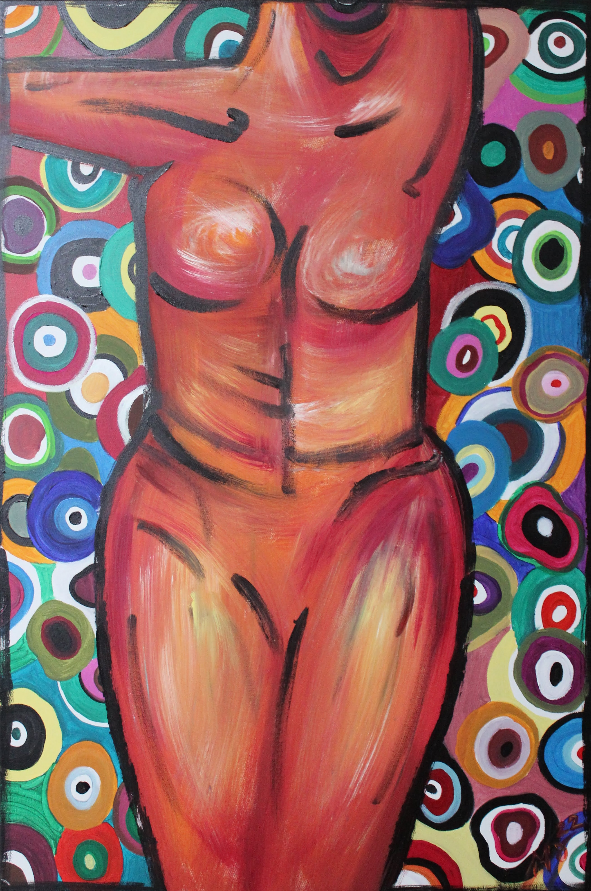
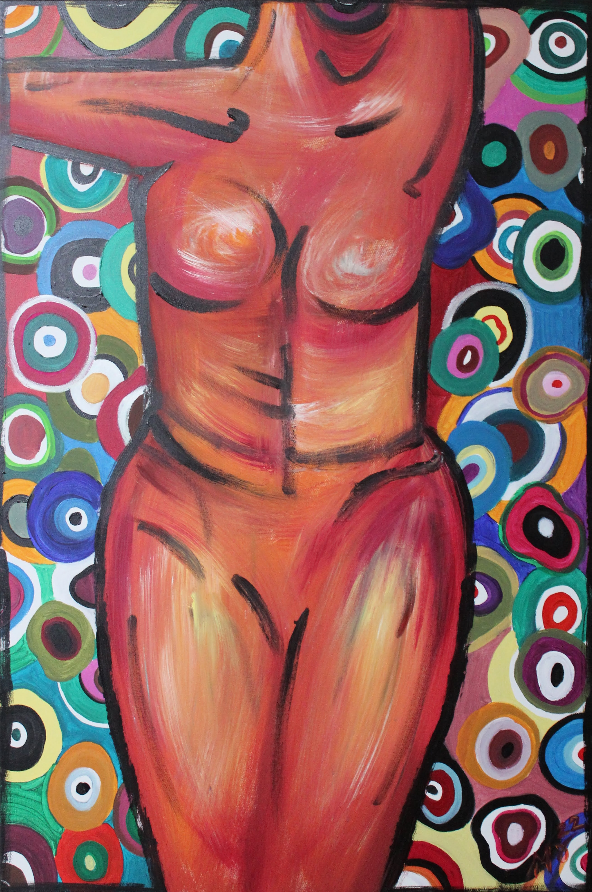
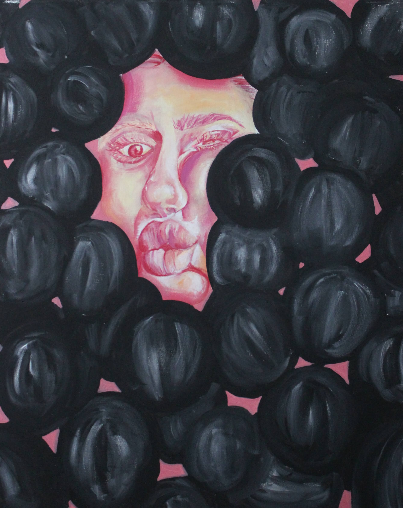
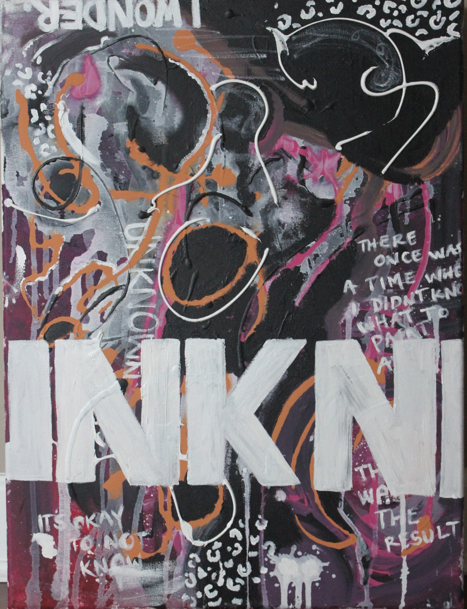
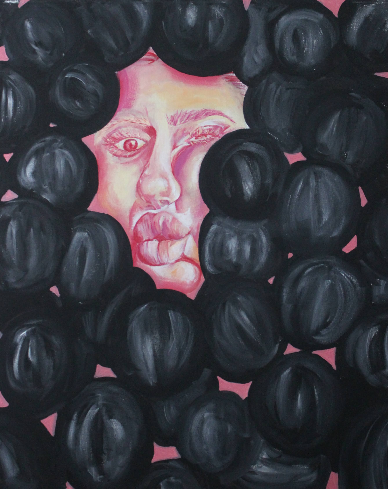
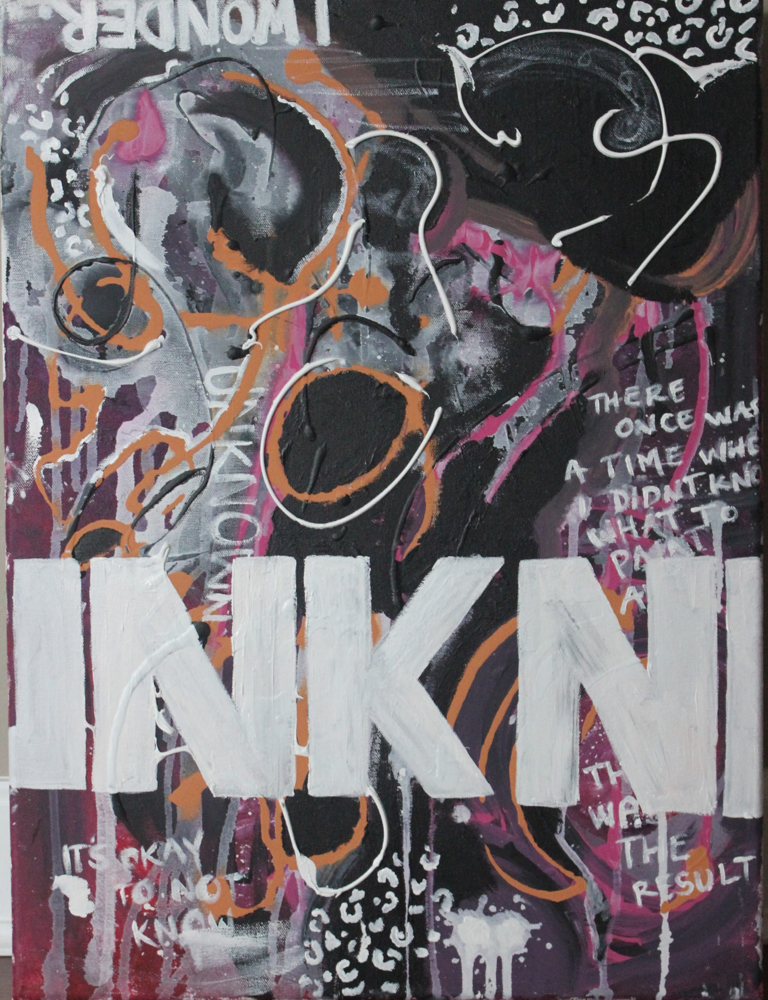

My Art
Acrylic Painting
 

 




I also enjoy acrylic painting. I have used acrylics for most of my life, but have really learned the medium within the past 5 years. It dries very quickly which allows you to work fast. I typically use acrylic paints for a wide variety of subjects. This could include realism, abstraction, and other genres. This is a painting that I made with no plan going into it. I named it “Unknown” because I was not certain of how the painted was going to end up. I added lots of layers and different things until I was satisfied.